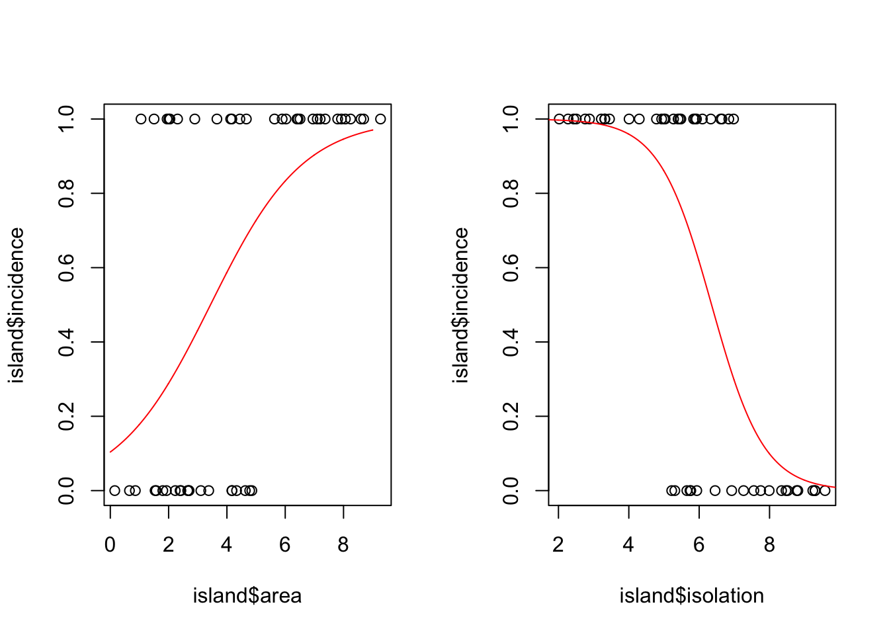

Chapter 15 Extending use cases of GLM
In the previous chapter we used the case of modelling count data, which is bounded at 0 and takes integer values, to understand how Generalised Linear Models work. In this chapter we extend our understanding by looking at some other type of data.
We will look at three types of binomial data:
- data coded as 0/1
- data on number of successes/failures
- percentage or proportion data
15.1 Logistic regression with binary (0/1) data
Sometimes we are confronted with data where the response variable is simply a success or a failure, or a presence or absence. This kind of data is often best-analysed using a Generalised Linear Model with a binomial error structure (strictly speaking the errors are Bernoulli errors, but these are simply one kind of binomial error). This kind of analysis is often called logistic regression. Some examples dead/alive, occupied/empty, healthy/diseased etc.
Again:
Linear models could lead to unreasonable values (probabilities >1 or <0).
Variance of response likely to be n-shaped (small near 0 and 1, large inbetween).
Errors are non-normal.
Can you think of any other examples of this kind of data?
15.2 Example: species presence/absence data
Our example concerns the presence or absence on a set of islands of a particular species of bird. The response variable we are interested in is called “incidence” and a value of 1 means that the bird is present and breeding on the island, while a value of 0 means that the island has no breeding population there. The explanatory variable is the size of the island in \(km^2\) and isolation (the distance of the island from the mainland in km).
Lets take a look at the data.
island <- read.csv("CourseData/isolation.csv")
names(island)## [1] "incidence" "area" "isolation"In this case there are two explanatory variables and we are therefore going to fit a multiple regression model with two variables using the GLM framework.
model1 <- glm(incidence ~ area+isolation, data = island, family = binomial)
summary(model1)##
## Call:
## glm(formula = incidence ~ area + isolation, family = binomial,
## data = island)
##
## Deviance Residuals:
## Min 1Q Median 3Q Max
## -1.8189 -0.3089 0.0490 0.3635 2.1192
##
## Coefficients:
## Estimate Std. Error z value Pr(>|z|)
## (Intercept) 6.6417 2.9218 2.273 0.02302 *
## area 0.5807 0.2478 2.344 0.01909 *
## isolation -1.3719 0.4769 -2.877 0.00401 **
## ---
## Signif. codes: 0 '***' 0.001 '**' 0.01 '*' 0.05 '.' 0.1 ' ' 1
##
## (Dispersion parameter for binomial family taken to be 1)
##
## Null deviance: 68.029 on 49 degrees of freedom
## Residual deviance: 28.402 on 47 degrees of freedom
## AIC: 34.402
##
## Number of Fisher Scoring iterations: 6Looking at coefficients and standard errors (which are on the logit scale) we can see that area has a significant positive effect on the probability of occupation (larger islands are more likely to be occupied) and isolation has a strong negative effect (isolated islands are much less likely to be occupied). To visualise this we can plot the model fits through a scatter plot of the data. It is best to do this separately for each variable so first we must make two separate models, one for each of the variables.
modela <- glm(incidence ~ area, data = island, family = binomial)
modeli <- glm(incidence ~ isolation, data = island, family = binomial)Then we can plot the two relationships in graphs side-by-side using the same approach as above. In these plots the fitted values (the modelled line) can be interpreted as a probability.
par(mfrow=c(1,2))
plot(island$area,island$incidence)
newData <- data.frame(area = seq(0,9,0.01))
newData$fit <- predict(modela,newData,type="response")
lines(newData$area,newData$fit,col="red")
plot(island$isolation,island$incidence)
newData <- data.frame(isolation = seq(0,10,0.01))
newData$fit <- predict(modeli,newData,type="response")
lines(newData$isolation,newData$fit,col="red")
15.3 Binomial regression with proportion/ratio data
Another important class of binomial data is proportion or success/failure data. These data are characterised by the fact that we have information on how many times an event occurred and how many times it did not occur. These data include infection rates of diseases, sex ratios, percentage mortality etc. These data are bounded in a similar way to the data above, and are also best-analysed using binomial errors.
- Can you think of any other examples of this kind of data?
15.3.1 Example: sex ratios
In the following example we will look at data from an experiment on sex ratios in an insect species. The experimenter wanted to know whether the population density at which the insect was held had a role in determining the sex ratio. Lets take a look at the data:
sexRatio <- read.csv("CourseData/sexratio.csv")
str(sexRatio)## 'data.frame': 8 obs. of 3 variables:
## $ density: int 1 4 10 22 55 121 210 444
## $ females: int 1 3 7 18 22 41 52 79
## $ males : int 0 1 3 4 33 80 158 365You can see that the data are integer counts of males and females. In this case, the density is simply the sum of the females and males.
Let’s plot the data as proportion males to see if we can see any pattern. First we can need to add a new column with that information:
sexRatio$propMale <- sexRatio$males/(sexRatio$males+sexRatio$females)Now we can plot the data. In this case I use the ylim argument to specify that the y-axis should go from 0 to 1 (since this is a proportion).
plot(sexRatio$density,sexRatio$propMale,ylab = "Proportion male",ylim=c(0,1))Figure 15.1: Sex ratio as a function of density
It looks like there is a relationship, and it is definitely non-linear so we are justified in using a GLM for the regression.
This regression is different from the last binomial GLM because we are not dealing with a simple 0 or 1 response. Instead we have a number in two catefories (male and female). These are analysed by binding (using the cbind function) the two vectors of male and female counts into a single object that we will use as the response variable.
y = cbind(sexRatio$males, sexRatio$females)Lets have a look:
y## [,1] [,2]
## [1,] 0 1
## [2,] 1 3
## [3,] 3 7
## [4,] 4 18
## [5,] 33 22
## [6,] 80 41
## [7,] 158 52
## [8,] 365 79You can see that this is simply a matrix with two columns.
Now lets fit the model and take a look at the summary output:
model <- glm(y ~ density, data = sexRatio,family=binomial)
summary(model) ##
## Call:
## glm(formula = y ~ density, family = binomial, data = sexRatio)
##
## Deviance Residuals:
## Min 1Q Median 3Q Max
## -3.4619 -1.2760 -0.9911 0.5742 1.8795
##
## Coefficients:
## Estimate Std. Error z value Pr(>|z|)
## (Intercept) 0.0807368 0.1550376 0.521 0.603
## density 0.0035101 0.0005116 6.862 6.81e-12 ***
## ---
## Signif. codes: 0 '***' 0.001 '**' 0.01 '*' 0.05 '.' 0.1 ' ' 1
##
## (Dispersion parameter for binomial family taken to be 1)
##
## Null deviance: 71.159 on 7 degrees of freedom
## Residual deviance: 22.091 on 6 degrees of freedom
## AIC: 54.618
##
## Number of Fisher Scoring iterations: 4We can now plot the data and the model’s fitted values through it:
plot(sexRatio$density,sexRatio$propMale,ylab = "Proportion male",ylim=c(0,1))
newData <- data.frame(density = seq(0,450,1))
newData$fit <- predict(model,newData,type="response")
lines(newData$density,newData$fit,col="red")
Hmmm. This doesn’t look so great. The model doesn’t really capture the initial increase in male sex ratio. Let’s see if we can improve it by logging the density variable before fitting.
model2 <- glm(y ~ log(density), data = sexRatio,family=binomial)
summary(model2) ##
## Call:
## glm(formula = y ~ log(density), family = binomial, data = sexRatio)
##
## Deviance Residuals:
## Min 1Q Median 3Q Max
## -1.9697 -0.3411 0.1499 0.4019 1.0372
##
## Coefficients:
## Estimate Std. Error z value Pr(>|z|)
## (Intercept) -2.65927 0.48758 -5.454 4.92e-08 ***
## log(density) 0.69410 0.09056 7.665 1.80e-14 ***
## ---
## Signif. codes: 0 '***' 0.001 '**' 0.01 '*' 0.05 '.' 0.1 ' ' 1
##
## (Dispersion parameter for binomial family taken to be 1)
##
## Null deviance: 71.1593 on 7 degrees of freedom
## Residual deviance: 5.6739 on 6 degrees of freedom
## AIC: 38.201
##
## Number of Fisher Scoring iterations: 4There are two ways of easily comparing two GLM models that have the same response variable. Firstly you can look at the residual deviance. Resdual deviance is simply the amount of variation in the response variable that is NOT explained by the model: models with smaller residual deviance are better. You can also look at the AIC (Akaike Information Criterion). The AIC is a summary statistic that tries to capture how well the model fits the data while accounting for how complex the model is. It is too complicated to get into right now except to say that smaller AIC values are better.
By both of these methods, the second model (model2) is better than model 1. Lets plot it to confirm that visually.
plot(log(sexRatio$density),sexRatio$propMale,ylab = "Proportion male",ylim=c(0,1))
newData <- data.frame(density = seq(0,400,1))
newData$fit <- predict(model2,newData,type="response")
lines(log(newData$density),newData$fit,col="red")Figure 15.2: Sex ratio as a function of log density
Yes, that looks much better. That just goes to show that one should visually inspect the models and consider other ways of fitting the data: there are often ways of improving the fit.
In the next session we’ll get some more practice of choosing modelling approaches and interpreting outputs…